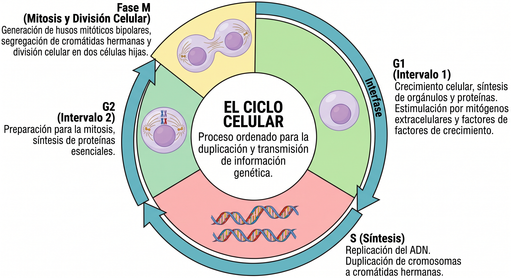
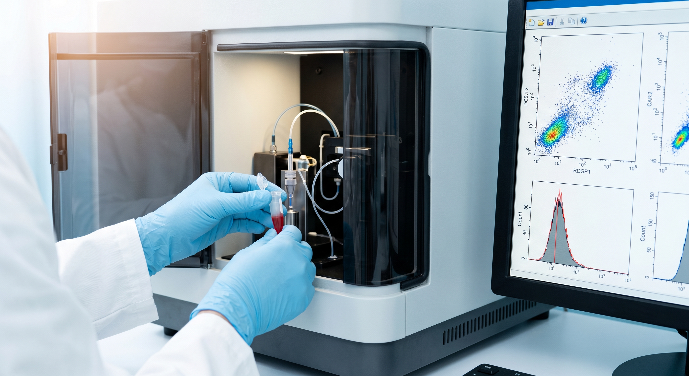
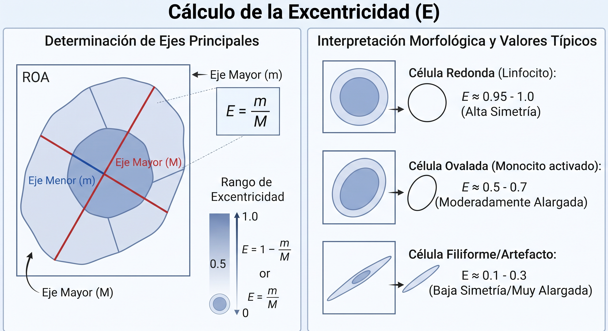
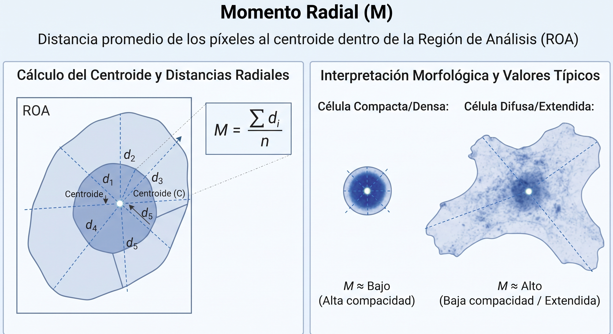
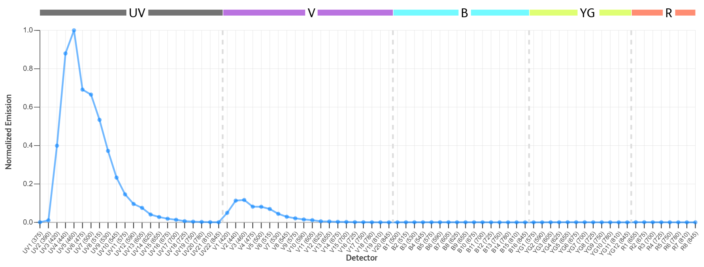
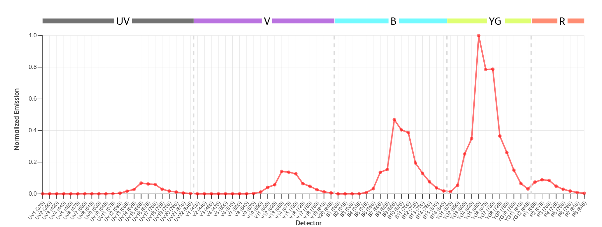
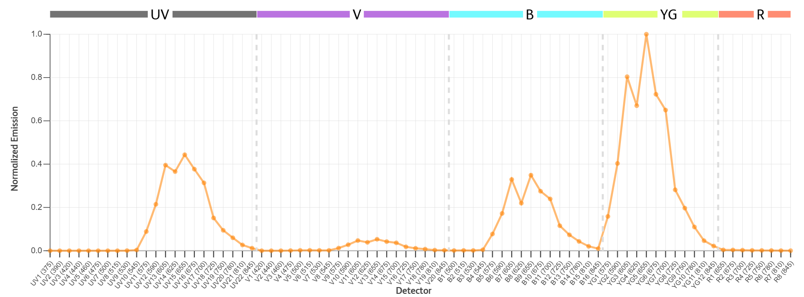

CICLO CELULAR
INTRODUCCIÓN
El análisis del ciclo celular por citometría de flujo utilizando únicamente agentes intercaladores del AD (como el yoduro de propidio o el DAPI) permite responder a preguntas generales relacionadas con la distribución de las células en las distintas fases del ciclo y la cuantificación del contenido de ADN.
*Video realizado con Gemini 3.5 Flash-Lite.¿Qué porcentaje de células se encuentran en cada fase del ciclo celular? Permite determinar la proporción exacta de poblaciones selulares en las fases G0/G1 (células con contenido de ADn diploide o 2N), la fase S (síntesis y rerplicación activa del ADN con contenidos intermedios) y las fases G2/M (células con contenido de ADN tetraploide o 4N).
¿Existe alteración o bloqueo en la proliferación celular? Permite evaluar si un tratamiento (como fármacos, radiación o compuestos tóxicos) detiene el ciclo celular en un punto de control específico (por ejemplo, un bloqueo en la fase G2/M o S).
¿Cuál es la fracción de células con contenido de ADN sub-diploide (apoptosis)? Facilita la identificación y cuantificación de picos o poblaciones con menor cantidad de ADN (sub-G1), lo cual es un marcador clásico de fragmentación del ADN asociadas a muerte celular programada o apoptosis.
¿Se ha induciod poliploidía o aneuploidía? Permite detectar anomalías donde las células multiplican su dotación cromosómica más allá de lo normal (por ejemplo, células con contenidos de ADN de 8N o superiores, o picos aneuploides en líneas celulares tumorales).
CICLO CELULAR: BREVE EXPLICACIÓN
El ciclo celular es un proceso altamente ordenado que resulta en la duplicación y transmisión de la información genética de una generación celular a la siguiente. Durante el proceso, el ADN debe replicarse con precisión y copias cromosómicas idénticas deben distribuirse a dos células hijas (1). El ciclo celular se divide en fases discretas: G1 (intervalo 1) es el intervalo o pausa entre la mitosis (fase M) y la síntesis de ADN (fase S). Durante la fase G1, la célula está sujeta a la estimulación de mitógenos extracelulares y factores de crecimiento; en respuesta a estos estímulos, la célula pasa a través de G1 y procede con la síntesis de ADN en la fase S; G2 (intervalo 2) es el intervalo entre la finalización de la síntesis de ADN (S) y la mitosis; la fase M se caracteriza por la generación de husos mitóticos bipolares, la segregación de cromátidas hermanas y la división celular (2).

*Imagen realizada con Gemini 3.5 Flash-Lite.MATERIALES
- Citómetro de flujo.
- Software para análisis (deconvolución) de las fases del ciclo celular.
- Solución de tinción DAPI: 0.1% (v/v) Triton X-100 y 1 \(\mu g/mL\) de DAPI en PBS.
CITÓMETRO DE FLUJO

*Imagen realizada con Gemini 3.5 Flash-Lite.CANALES DE IMAGEN
FSC
SSC (Imaging)
Light Loss (violeta): Pérdida de luz se puede medir a partir del láser violeta además del láser azul.
Solo se puede utilizar el láser azul para generar imágenes de pérdida de luz.
El láser violeta se puede utilizar para diferenciar el tamaño y sirve como alternativa a la dispersión frontal (forward scatter) para separar subpoblaciones clásicas de sangre total.
- Light Loss (Imaging): La pérdida de luz que genera imágenes se puede medir a partir del láser azul (de imágenes).
A medida que las partículas (células) atraviesan el láser, la interacción de la luz con la partícula da como resultado una dispersión en todas direcciones.
La pérdida de luz es una medida de la luz (fotones) que se pierde del láser debido a la dispersión y la absorción de luz por parte de una partícula (célula).
Las imágenes de pérdida de luz son similares a la microscopía de campo claro.
ImgB1 (535)
ImgB2 (600)
ImgB3 (790)
PARÁMETROS DE IMAGEN
- Excentricidad: Una relación entre el eje más corto y el eje más largo (momento) dentro de la región de análisis (ROA).
Es un parámetro matemático o morfológico que describe que tan alargada o simétrica es una célula o partícula.
¿Cómo se calcula?
El sistema toma el ROA de una célula y calcula sus eje principales:
- Identifica el eje más largo (su longitud máxima).
- Identifica el eje más corto (su ancho máximo o perpendicular al anterior).
- La **excentricidad es la proporción (cociente) entre ambos (
eje corto / eje largo).

*Imagen realizada con Gemini 3.5 Flash-Lite.¿Cómo interpretarla en la práctica?
Célula redonda (Linfocito o esfera perfecta): Con una forma casi circular, presenta una Excentricidad alta, cercana a 1.0.
Célula ovalada (Monocito activado): Al estar moderadamente alargada, su valor de excentricidad desciende, situándose alrededor de 0.5 - 0.7.
Célula filiforme/artefacto: Al ser muy alargada y delgada, su valor de excentricidad es muy baja, indicando una alta asimetría, con un valor cercano a 0.1 - 0.3.
MOMENTO RADIAL: La distancia promedio de los píxeles desde el centroide dentro de la Región de Análisis.
Este parámetro describe la distribución espacial de los píxeles en relación con el centro de la célula.
¿Qué representan los elementos clave?
Centroide: Es el centro geométrico o el “punto de equilibrio” de masa/intensidad de la célula dentro de su Región de Análisis (ROA).
Píxeles: Los puntos que componen la imagen digital de la célula (tanto los más brillantes como los de los bordes).
Momento Radial: Mide, en promedio, qué tan lejos o cerca están esos píxeles del centroide.
¿Cómo se interpreta en la práctica?
Valor alto de momento radial: Significa que una gran parte de los píxeles o la intensidad de la señal se encuentran distribuidos hacia la periferia, indicando una célula más difusa, grande o extendida.
Valor bajo de momento radial: Significa que los píxeles están muy concentrados cerca del centroide, lo que refleja una célula más compacta, pequeña o densa.

*Imagen realizada con Gemini 3.5 Flash-Lite.SONDAS / TINTES EMPLEADAS EN EL ANÁLISIS DEL CICLO CELULAR POR CF



El IP tiñe todo el ácido nucleico de la célula de forma estequiométrica.
METODOLOGÍA
TINCIÓN - IODURO DE PROPIDIO
REACTIVOS NECESARIOS
- Etanol al 70% (previamente enfriado a -20 ªC).
Preparar con agua destilada, no con PBS, para evitar precipitación de sales.
Tampón fosfato salino (PBS).
Solución RNasa A (100 g/mL o concentración equivalente según fabricante).
Solución de Yoduro de Propidio (50 μg/mL comercial o diluida en PBS).
PROTOCOLO
Recolectar las células en suspensión (o despegarlas suavemente con tripsina si son adherentes). Se recomienda un mínimo de 1 x 106 células por condición.
Centrifugar a 300 x g por 5 minutos y decantar el sobrenadante.
Lavar el botón celular resuspendiendo en 1 ml de PBS frío. Centrifugar nuevamente a 300 x g por 5 minutos y decantar.
Resuspender el botón celular residual en el PBS remanente (aprox. 100 μl) dándole unos toques suaves al tubo.
Añadir 1 mL de Etanol al 70% frío (-20 °C) gota a gota mientras se agita el tubo continuamente en un vórtex a velocidad baja.
Esto es fundamental para fijar las células de manera individual y prevenir la formación de agregados moleculares (clumping).
- Incubar a 4 °C durante al menos 30 minutos.
Las muestras fijadas en este punto se pueden almacenar a -20 °C durante semanas antes de su lectura.
Centrifugar las células fijadas a una velocidad ligeramente mayor (500 g por 5-10 minutos) debido a que las células fijadas en etanol son menos densas. Descartar el etanol con cuidado.
Lavar dos veces agregando 2 mL de PBS, centrifugando en cada paso a 500 x g por 5 minutos.
Resuspender el botón celular en 500 μl de PBS que contenga ARNasa A (concentración final aproximada de 20 - 50 μg/ml).
Incubar 15 minutos a 37 °C o 30 minutos a temperatura ambiente
El IP se une indicriminadamente tanto al ADN como ARN. La ARNasa degrada el ARN para asegurar que la fluorescencia provenga únicamente del ADN celular.
Añadir Yoduro de Propidio a una concentración final de 50 μg/ml (o según las instrucciones de volumen del fabricante).
Mezclar suavemente por inversión e incubar durante 30 minutos a temperatura ambiente (preferentemente a 37 °C) en la oscuridad. El IP es fotosensible.
No lavar las células después de añadir el IP; las muestras deben ser leídas directamente con el colorante en la solución.
TINCIÓN - 7-AAD
REACTIVOS NECESARIOS
- Etanol al 70% (previamente enfriado a -20 ªC).
Preparar con agua destilada, no con PBS, para evitar precipitación de sales.
Tampón fosfato salino (PBS).
Solución comercial de 7-AAD (típicamente a 1 mg/ml en DMSO).
Opcional pero recomendado: ARNasa A. Aunque el 7-AAD tiene mucha mayor especificidad por el ADN que el IP, la digestión de ARN sigue siendo una buena práctica para obtener picos de fluorescencia extremadamente limpios (coeficientes de variación bajos).
PROTOCOLO
Recolectar las células en suspensión (o despegarlas suavemente con tripsina si son adherentes). Se recomienda un mínimo de 1 x 106 células por condición.
Centrifugar a 300 x g por 5 minutos y decantar el sobrenadante.
Lavar el botón celular resuspendiendo en 1 ml de PBS frío. Centrifugar nuevamente a 300 x g por 5 minutos y decantar.
Resuspender el botón celular residual en el PBS remanente (aprox. 100 μl) dándole unos toques suaves al tubo.
Añadir 1 mL de Etanol al 70% frío (-20 °C) gota a gota mientras se agita el tubo continuamente en un vórtex a velocidad baja.
Esto es fundamental para fijar las células de manera individual y prevenir la formación de agregados moleculares (clumping).
- Incubar a 4 °C durante al menos 30 minutos.
Las muestras fijadas en este punto se pueden almacenar a -20 °C durante semanas antes de su lectura.
Centrifugar las células fijadas a una velocidad ligeramente mayor (500 g por 5-10 minutos) debido a que las células fijadas en etanol son menos densas. Descartar el etanol con cuidado.
Lavar dos veces agregando 2 mL de PBS, centrifugando en cada paso a 500 x g por 5 minutos.
Resuspender el botón celular en 500 μl de PBS que contenga ARNasa A (concentración final aproximada de 20 - 50 μg/ml).
Incubar 15 minutos a 37 °C o 30 minutos a temperatura ambiente.
Añadir 7-AAD a una concentración final de 10 a 25 μg/ml.
Mezclar suavemente por inversión.
Incubar durante 20 a 30 minutos a temperatura ambiente en la oscuridad.
No lavar las células después de la tinción. Mantenerlas en hielo y en la oscuridad hasta su análisis en el citómetro.
TINCIÓN - DAPI
DAPI es altamente selectivo por el ADN (se une específicamente a regiones ricas en adenina y timina), lo que significa que no requiere el uso de RNAsa para degradar el ARN.
REACTIVOS NECESARIOS
- Etanol al 70% (previamente enfriado a -20 ªC).
Preparar con agua destilada, no con PBS, para evitar precipitación de sales.
Tampón fosfato salino (PBS).
DAPI diluido en PBS a una concentración final de 1 a 5 μg/ml.
Opcional pero recomendado
TRITON X-100 al 0.1% (si usas PFA para permeabiliza la membrana).
PROTOCOLO
Centrifugar la suspensión celular (aprox. 1 x 106 células) a 300 - 500 g por 5 minutos y decantar el medio.
Lavar una vez resuspendiendo en 1 - 2 mL de PBS frío y volver a centrifugar.
Resuspender el botón celular en el remanente de PBS.
Fijar con etano: Agregar 1 mL de etanol al 70% helado gota a gota mientras agitas suavemente en vórtex. Incubar a -20 °C durante al menos 2 horas.
Si usas PFA al 2%, incubar por 15 minutos a tempertaura ambiente, centrifugar, y luego permeabilizar con Tritón X-100 al 0.1% en PBS por 10 minutos.
Centrifugar a 500-800 g durante 5 minutos para sedimentar las células (especialmente si usaste etanol).
Lavar dos veces con etanol 2 mL de PBS frío para eliminar por completo el fijador.
Resuspender el botón celular final en 500 L de la solución de tinción DAPI (1 - 5 μg/mL).
Incubar durante 15 a 30 minutos a temperatura ambiente protegidos de la luz.
A diferencia del IP, no es necesario lavar el DPAI antes de la lectura; las células se pueden analizar directamente en esta solución.
El DAPI es semi-permeable a la membrana de células vivas, pero si se utiliza a una concentración más alta, puede ingresar a células viables sin necesidad de fijarlas.
Cosechar y lavar células vivas con PBS.
Resuspender en PBS que contenga 10 μg/mL de DAPI y Tritón X-100 al 0.1%.
Incubar por 30 - 45 minutos a 37 °C en la oscuridad y pasar directamente al citómetro.
Hecho con 💙 por Jairo